Modelling 3D Objects
The Rook
In this lesson we learnt even more functions of Fusion 360. The next item we designed was the Rook from chess.
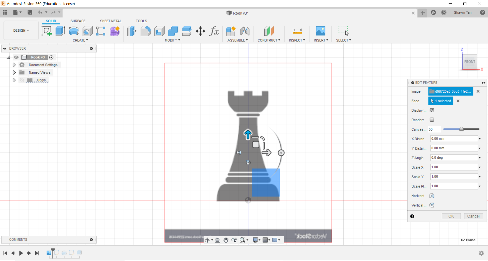We were told by Mr Chew to try making some chess pieces. The first thing we did was to download an image of a rook and insert it into Fusion 360
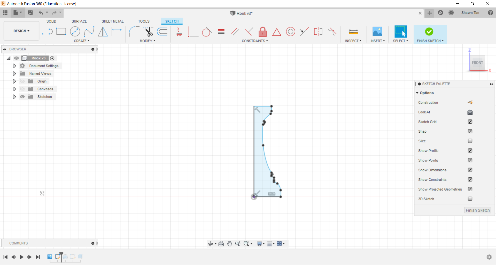In this next image I would trace out the profile of the rook. For the top, left, and bottom, I used lines to trace it out (bear in mind I did not include the protrusions on the top as that would be added later). For the more intricate right side, I used spline to fit line to trace out the profile.
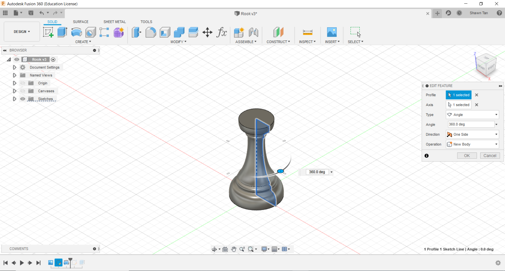The next thing I did was to revolve the profile.
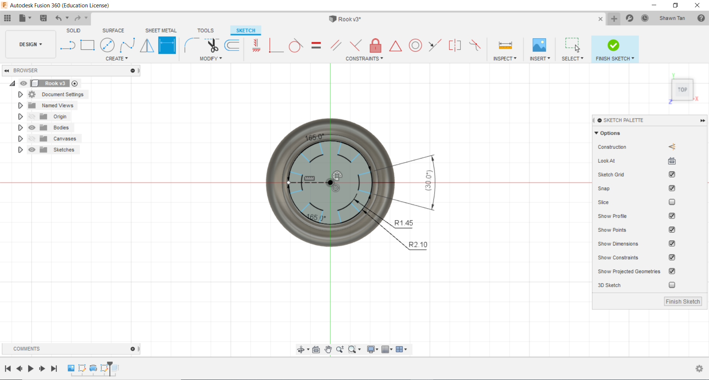I then created a sketch on the top surface of the solid. I create 2 circles, 1 that is about radius 1.45mm and another one that reaches to the edge of the top surface. i seperated it with 2 lines that are 30 degrees apart. I trimmed out the excess and made a circular array of the remaining profile.
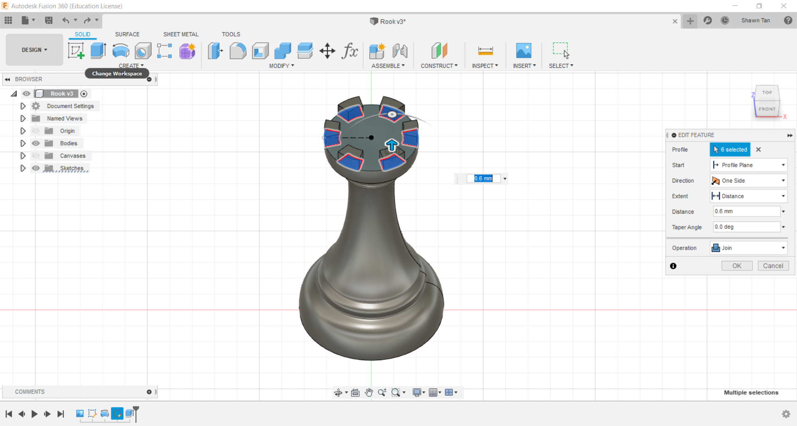The next thing I did was to extrude the profiles.
Sphere in a Cube
After making the rook, we tried making this Sphere in a cube design
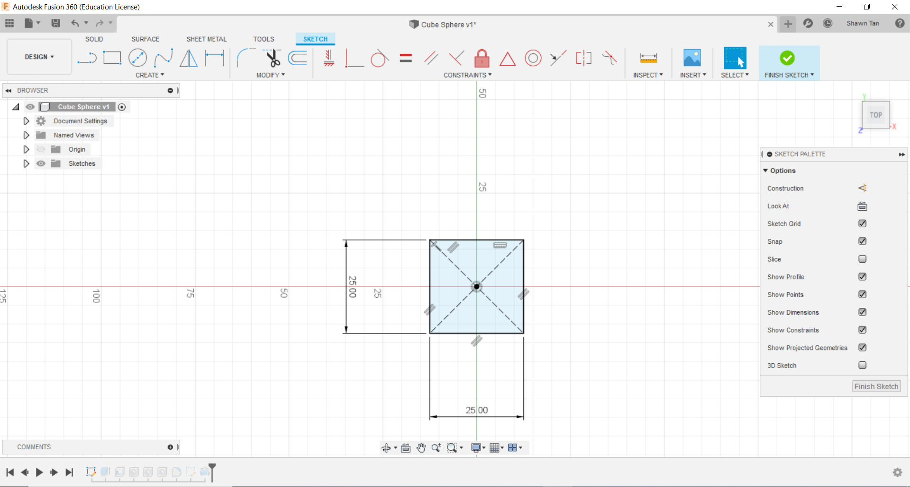I started off with a sketch. I used a centre point rectangle. This was to allow me to later on create a profile without using offset planes.
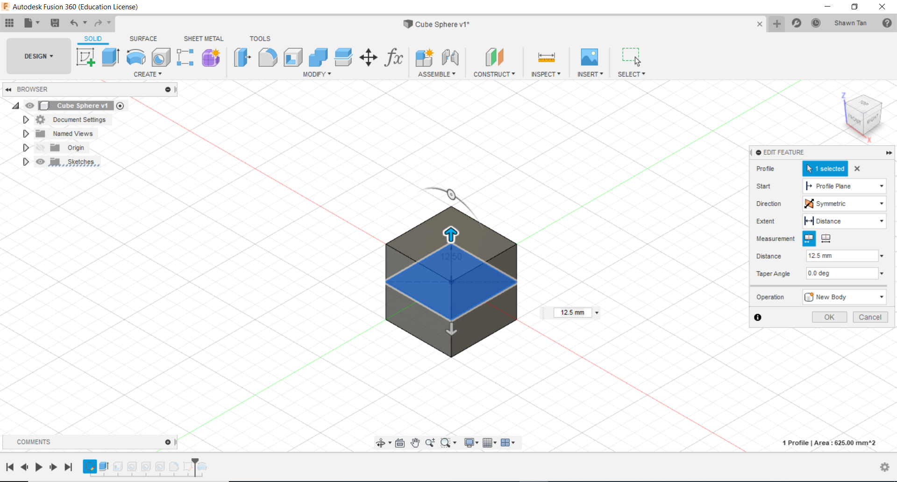In this next image, I made a symetric extrusion of 12.5mm each side (totalling 25mm).
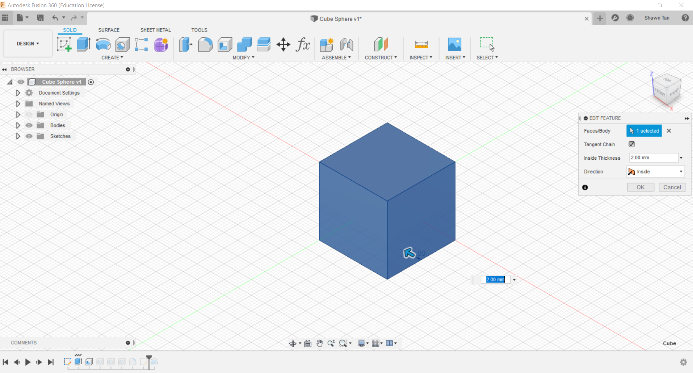I then proceeded to shell the solid by 2mm, making a hollow interior with a 2mm thick wall.
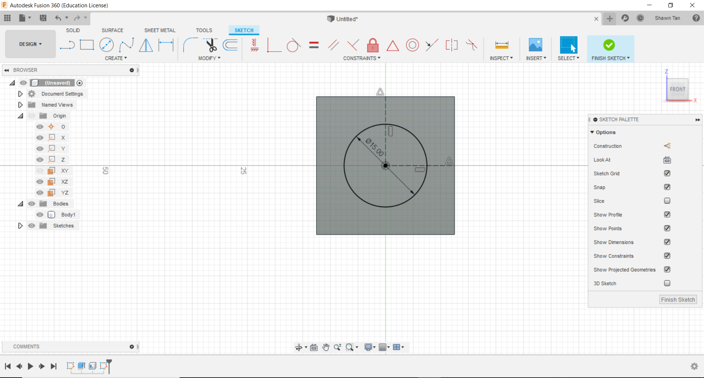For this image, I created a sketch on the front face. On that sketch I created a circle of diametre 15mm. I created two lines, connecting to the midpoints of the top and right side of the cube to the centre of the circle. I then placed vertical and horizontal contraints on the lines and made them construction lines. This was to ensure that when the cube's dimension is modified, the circle will say in the centre of the cube.
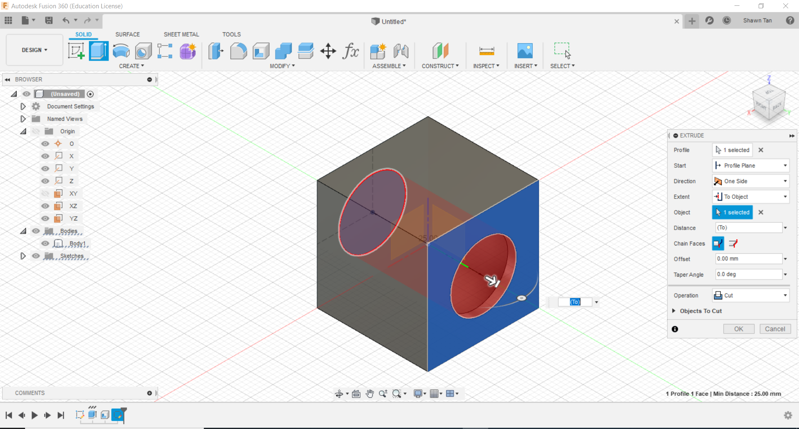I then extruded the circle to the opposite side of the cube to make it cut a hole into the object.
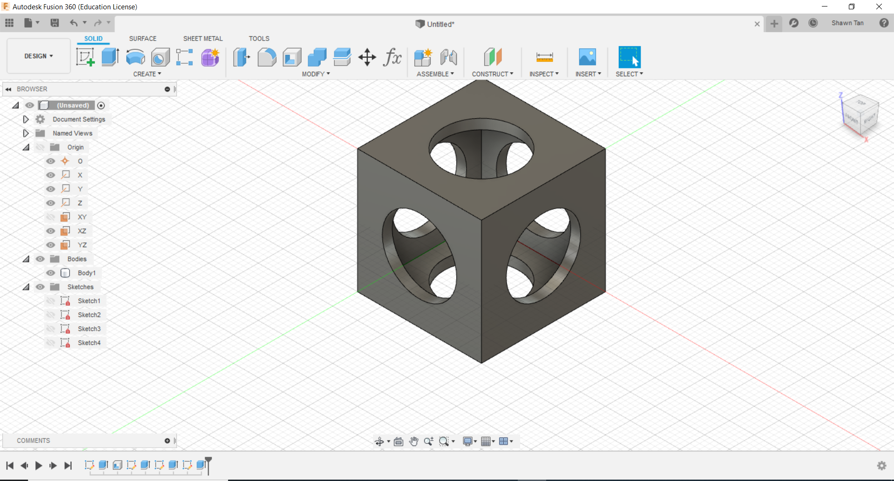I repeated this process on the other 2 faces until I ended up with what you see above
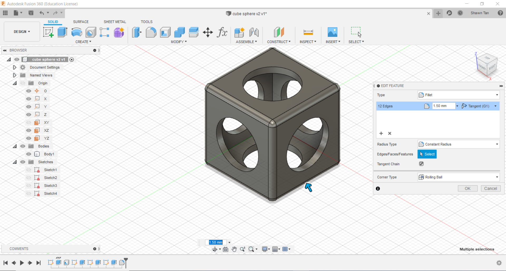I then filleted the outer edges of the cubes by 1.5mm.
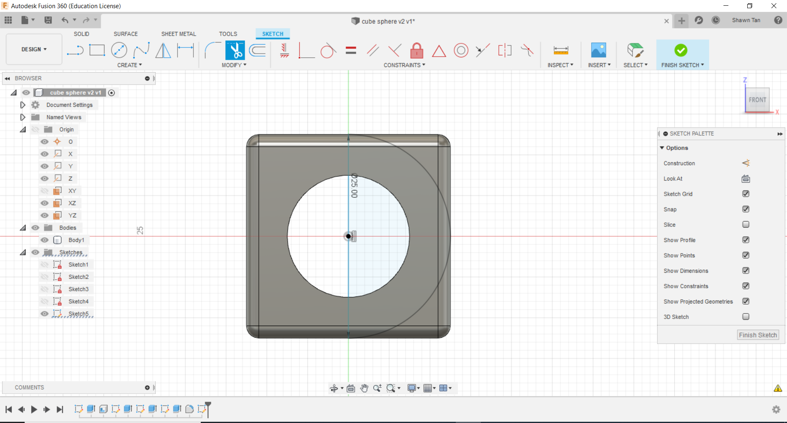The next thing I did was to create a sketch on the XZ plane (I avoided having to use the offset plane tool here). I created a circle of diameter 25mm and a line along the Z-axis and trimmed out half the circle.
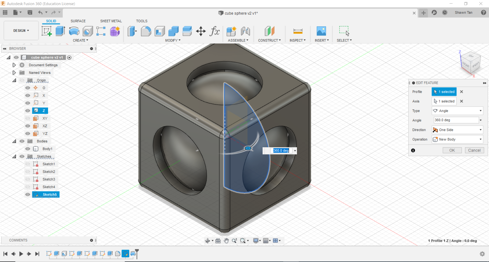I the revolved the profile to create the sphere...
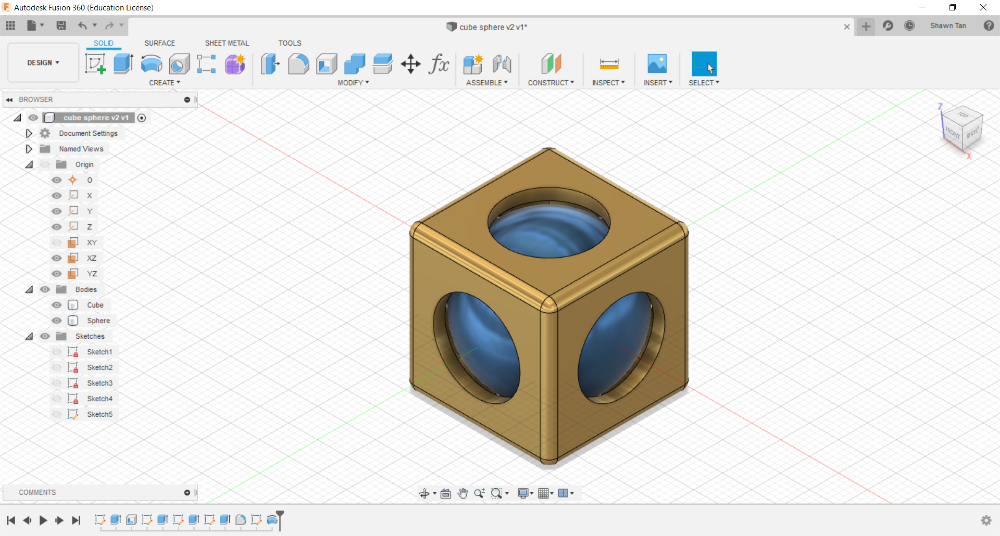...and changed the physical material. The cube was brass and the sphere was blue aluminium.